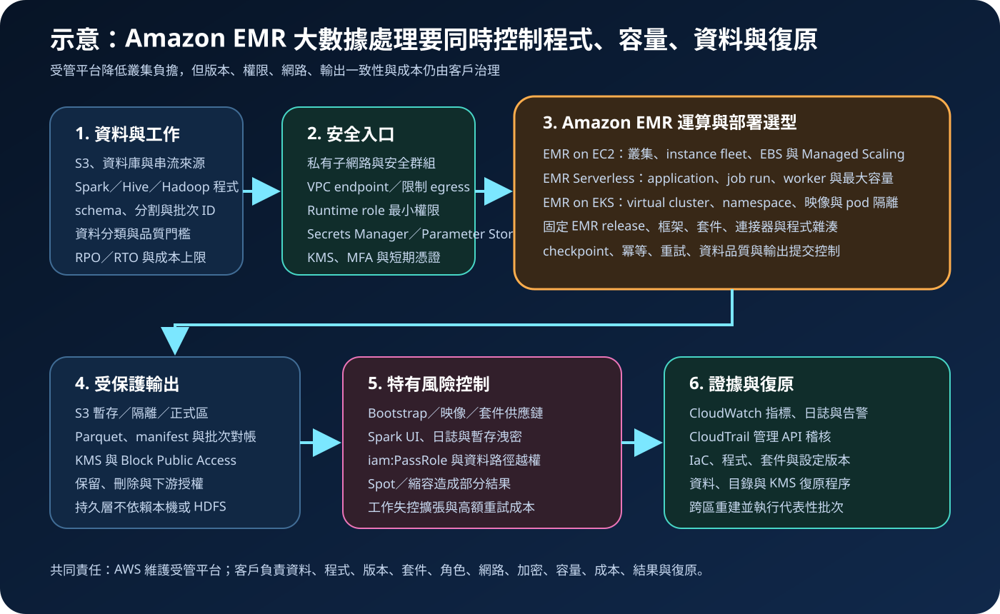

Amazon EMR：大數據處理、部署選型與安全治理
Amazon EMR 是執行 Apache Spark、Apache Hadoop、Apache Hive 等開源大數據框架的受管平台，可採 EMR on EC2、EMR Serverless 或 EMR on EKS。服務降低叢集佈建與框架整合負擔，但不會代替資料分割、工作調校、版本治理、網路隔離、權限控制、機密管理、成本護欄或災難復原。
作者：Dr. William｜查閱與發布：2026-10-01
服務定位
Amazon EMR 適合需要以 Spark、Hadoop、Hive 及相關開源元件處理大量資料的批次分析、互動查詢、串流處理與機器學習前處理。它可讀寫 Amazon S3、DynamoDB、資料庫與其他資料來源，並把運算環境、框架版本及 AWS 整合包裝成可重複部署的工作平台。
EMR 的核心價值是降低大數據運算平台的基礎設施與框架維護成本，不是自動修正低效率程式、資料傾斜、過寬權限、公開網路、錯誤 schema 或不可重跑流程。部署模式、EMR release、執行角色、instance fleet 或 worker、bootstrap action、自訂映像、套件及資料路徑都必須納入版本、測試與稽核。
核心概念與適用邊界
部署與運算
- EMR on EC2：建立具有 primary、core 與 task 節點的叢集，能細緻控制 instance type、EBS、網路、應用程式與生命週期；團隊也需承擔容量、修補與節點維運責任。
- EMR Serverless：以 application、job run、runtime role 與 worker 執行 Spark 或 Hive 工作，服務依工作需求增減 worker；仍須設定最大容量、逾時、日誌、網路及資料權限。
- EMR on EKS：在既有 Amazon EKS 上執行 EMR 工作，適合已有 Kubernetes 平台與隔離模型的團隊；EKS、節點、namespace、映像及 pod 安全仍由客戶治理。
- EMR release：每個版本綁定特定框架、元件與修正；升級前要驗證程式、連接器、序列化、效能及相容性。
- Steps／job runs：以可追蹤的工作單位提交處理；應設定重試、逾時、冪等、輸入快照與輸出提交規則。
資料與治理
- EMRFS 與 S3：常以 S3 保存輸入、輸出、程式及日誌，使運算可與資料生命週期分離；bucket、prefix、KMS 與跨帳戶政策仍須明確限制。
- 本機儲存與 HDFS：可支援 shuffle、暫存或需要資料局部性的工作，但節點終止可能使本機資料消失，不應把暫存層誤當唯一持久副本。
- Managed Scaling：EMR on EC2 可依工作負載調整容量；上下限、Spot 中斷、節點退役、資料傾斜及啟動時間仍會影響 SLA。
- 安全組態：可集中設定靜態、傳輸中及本機磁碟加密；KMS key policy、憑證、角色與資料來源政策仍須配套。
- 觀測與證據：CloudWatch、EMR 事件、工作日誌與 CloudTrail 分別支援效能、失敗、狀態與管理 API 稽核；必須設定保留、遮罩及告警。
適合與不適合的使用情境
適合
- 需要以 Spark 或 Hadoop 生態處理大量資料，工作能切分、平行執行並接受批次或秒至分鐘級延遲。
- 需要控制框架版本、運算規格、套件與調校參數，或移轉既有 Spark、Hive、Hadoop 工作。
- 資料主要保存在 S3，運算環境可按工作建立、擴縮或終止，避免資料與叢集永久綁定。
- 工作量波動大，可透過 EMR Serverless、暫態叢集、Managed Scaling、Spot 與排程控制成本。
- 團隊能管理資料分割、程式效能、IAM、VPC、KMS、日誌、版本、容量上限與復原演練。
不適合或不能單獨完成
- 需要毫秒級逐筆交易、嚴格 OLTP 鎖定或長時間對外提供低延遲 API。
- 資料量小、邏輯簡單且低頻，單一 Lambda、Glue 工作或資料庫查詢即可合理完成。
- 希望把低效率 Spark 程式直接搬上雲端，卻不處理 shuffle、資料傾斜、小檔案與分割策略。
- 無法接受節點或 Spot 中斷，且工作沒有 checkpoint、重試、冪等與輸出一致性設計。
- 把 Serverless 誤解為不需要版本升級、最大容量、日誌、資料權限、網路與成本管理。
示意故事案例：夜間訂單與行為資料處理
以下為示意案例，不代表特定企業或正式部署。 一家零售團隊每天需要把 S3 中的網站點擊、門市訂單與商品資料整理成分析用 Parquet。團隊先定義資料擁有者、敏感度、schema、批次 ID、品質門檻、完成時限及月成本上限，再比較 EMR on EC2 與 EMR Serverless。由於工作每日只執行數小時且流量差異大，選用 EMR Serverless Spark application，設定最大 worker 容量及工作逾時，避免異常輸入無限制擴張。
排程器以專用 runtime role 提交 job run；角色只允許讀取核准輸入 prefix、取得必要的 Secrets Manager 機密、使用指定 KMS key，並寫入隔離與正式輸出 prefix。application 連接私有子網路，安全群組只允許必要資料庫連線。程式先驗證 schema、惡意內容、主鍵重複及個資欄位，再完成去識別化與彙總。輸出以批次 ID 暫存，品質檢查通過後才切換 manifest；失敗工作可安全重跑。CloudWatch 保存應用程式指標與受遮罩日誌，CloudTrail 追蹤 EMR、IAM、KMS 與網路變更。程式、設定、相依套件、資料目錄與必要輸入保留跨區副本，定期在另一區域重建 application 並執行代表性批次。

建置與運作流程
- 定義工作需求：記錄資料量、格式、敏感度、處理窗口、並行度、延遲、框架、相依套件、RPO／RTO 與成本上限。
- 選擇部署模式：依控制需求、既有 EKS、工作持續時間、啟動延遲、容量波動與維運能力比較 EC2、Serverless 或 EKS。
- 固定版本：選定 EMR release、Spark／Hive 版本、Java／Python 環境、連接器、自訂映像與套件雜湊。
- 設計資料分區：分離輸入、暫存、隔離、正式輸出及日誌 prefix；設定 S3 Block Public Access、bucket policy、生命週期與版本。
- 配置身分：人員使用聯合登入、MFA 與短期憑證；服務角色、EC2 instance profile 或 Serverless runtime role 只取得必要權限。
- 建立私有網路：優先使用私有子網路、限制性安全群組與 VPC endpoint；若需連接資料庫，只開放指定來源、目的與埠。
- 管理機密與加密：credential 存於 Secrets Manager；一般參數存於 Parameter Store；S3、EBS、本機磁碟、日誌與傳輸依需求使用 KMS 與 TLS。
- 設定容量護欄：限制 instance fleet、Managed Scaling 範圍或 Serverless 最大容量、worker 規格、並行工作、逾時與重試。
- 開發可重跑工作：加入批次 ID、checkpoint、冪等、去重、輸出暫存與原子發布，避免重試造成重複或半成品。
- 測試異常：驗證資料傾斜、小檔案、格式錯誤、節點中斷、Spot 回收、KMS 拒絕、網路中斷及依賴下載失敗。
- 建立觀測：收集 driver、executor、step 或 job run 日誌、資源使用、處理筆數、延遲、失敗與成本；設定 CloudWatch 告警及 CloudTrail 稽核。
- 演練復原：從 IaC、程式、套件、設定與資料副本，在另一區域重建角色、網路、KMS、application 或叢集並驗證結果。
成本、可用性與維運考量
EMR on EC2 的成本包含 EMR 費用、EC2、EBS，以及可能的 S3、KMS、CloudWatch、NAT Gateway、資料傳輸與公有 IPv4；EMR on EKS 還包含 EKS 與節點或 Fargate；EMR Serverless 依 worker 使用的 vCPU、記憶體與儲存計費，預先初始化容量在閒置時仍可能產生成本。價格、支援規格與區域能力應在部署前依官方頁面重新確認。
成本控制不只依賴自動擴縮。應優先處理資料分割、欄式格式、壓縮、小檔案合併、predicate pushdown、shuffle、資料傾斜及 executor 配置，再設定容量上下限、逾時、重試、閒置終止、Spot 比例、標籤、預算與異常告警。未受控的迴圈、資料爆量或失敗重試可迅速放大運算與日誌費用。
可用性必須以整條資料流程評估。EMR 服務可用不代表來源、S3、VPC、DNS、KMS、Secrets Manager、套件倉庫、資料目錄與輸出端都可用。HDFS 或本機磁碟上的唯一資料可能隨叢集故障或終止而遺失；關鍵資料、程式、設定及中繼資料應保存於持久層並驗證跨區重建。Serverless 跨可用區執行不等於跨區災難復原。
Amazon EMR 特有資安風險與控制
- 公開叢集與管理介面：EMR on EC2 優先部署私有子網路並保持 EMR Block Public Access；禁止 0.0.0.0/0 或 ::/0 對管理埠與應用程式介面開放。
- 執行角色資料越權：依工作、團隊與環境分離 runtime role 或 instance profile，限制 S3 prefix、Glue Data Catalog、KMS、資料庫與跨帳戶存取。
- iam:PassRole 濫用：限制可傳遞角色、服務與條件，避免開發者把高權限角色交給叢集或 job run。
- Bootstrap action／自訂映像供應鏈：固定來源、版本與雜湊，掃描弱點並限制下載目的地；啟動腳本不得從可被任意修改的位置執行。
- 框架與元件版本落後：建立 EMR release 升級週期，在隔離環境驗證相容性、安全修正、連接器與效能後再推進正式環境。
- Spark UI、日誌與事件洩密：限制介面與日誌讀取，遮罩 SQL、參數、資料列與錯誤內容；設定 KMS、保留、刪除及異常下載告警。
- 工作程式任意外連：限制 egress、DNS、NAT 與 endpoint policy，只允許核准服務及套件來源，防止資料外流或惡意依賴下載。
- 本機暫存與 shuffle 洩密：啟用適用的本機磁碟與傳輸中加密，避免不同信任邊界共用運算，並在工作後清除暫存。
- 多租戶與互動環境越權：依團隊、資料敏感度及正式／測試環境分離 application、叢集、namespace、角色、KMS key 與日誌。
- Spot 或縮容造成部分結果：使用 checkpoint、冪等、輸出暫存、manifest 與品質閘門，不能把工作狀態成功等同業務結果完整。
- Serverless 無上限擴張：設定 maximum capacity、工作逾時、並行限制與成本告警，定期檢查預先初始化容量及閒置 application。
- 資料生命週期失控：對輸入、暫存、隔離、日誌與輸出設定不同的保留、存取及刪除政策，避免暫存副本長期留存敏感資料。
共同責任邊界
AWS 負責 EMR 受管服務平台及其底層雲端基礎設施的安全；依部署模式不同，AWS 管理的範圍有所差異。客戶仍負責資料、程式、框架與 release 選擇、套件、自訂映像、角色、網路、加密、日誌、容量、成本、結果正確性與復原。
客戶須落實 IAM 最小權限、管理者 MFA 與短期憑證、私有網路及工作隔離、S3 公開存取封鎖、KMS 加密、Secrets Manager／Parameter Store、CloudTrail／CloudWatch、資料與設定備份及跨區復原。AWS 不會替客戶判斷 Spark 程式是否會遺漏或重複資料、bootstrap action 是否可信、runtime role 是否能讀取過多資料、輸出是否含敏感欄位，或另一區域能否在 RTO 內重建工作。
上線前可執行檢查清單
- □ 已記錄工作擁有者、資料分類、資料量、處理窗口、框架版本、RPO／RTO、品質門檻與月成本上限。
- □ 已以控制需求、啟動延遲、工作波動、既有 EKS 與維運能力選定 EC2、Serverless 或 EKS。
- □ EMR release、Spark／Hive、Java／Python、套件、連接器、自訂映像與雜湊均已版本化並完成升級測試。
- □ 人員使用聯合登入、MFA 與短期憑證；服務角色、runtime role、instance profile 與 iam:PassRole 均已最小化。
- □ 叢集或 application 使用核准私有網路；安全群組、NACL、DNS、NAT 與 endpoint policy 沒有不必要開放。
- □ EMR Block Public Access 已保持啟用，管理埠與 Spark／YARN／Hadoop 介面未對網際網路公開。
- □ S3 輸入、暫存、隔離、日誌與輸出 prefix 已分離，Block Public Access、bucket policy、版本與生命週期已檢查。
- □ credential 只存於 Secrets Manager；一般設定存於 Parameter Store；程式、bootstrap、參數、映像與日誌均無明文機密。
- □ S3、EBS、本機磁碟、日誌及傳輸中資料已依分類設定 KMS、TLS、key policy 與輪替程序。
- □ Serverless 最大容量，或 EC2 instance fleet／Managed Scaling 上下限、Spot 策略、閒置終止與工作逾時已設定。
- □ 工作具備批次 ID、checkpoint、冪等、去重、暫存輸出、品質閘門及失敗後重跑程序。
- □ 已測試資料傾斜、小檔案、格式錯誤、節點中斷、Spot 回收、KMS 拒絕、網路中斷及依賴失敗。
- □ CloudWatch 可追蹤資源、處理量、延遲、失敗、重試與成本；CloudTrail 可追蹤 EMR、IAM、KMS 與網路變更。
- □ Spark UI、工作日誌、暫存與錯誤輸出皆有限制存取、敏感內容遮罩、保留及刪除程序。
- □ 已在另一區域從 IaC、程式、套件、設定與資料副本重建角色、網路、KMS、application 或叢集並完成驗證。
AWS 官方一手來源
- What is Amazon EMR?（查閱：2026-10-01）
- Amazon EMR architecture（查閱：2026-10-01）
- What is Amazon EMR Serverless?（查閱：2026-10-01）
- What is Amazon EMR on EKS?（查閱：2026-10-01）
- Amazon VPC options for EMR clusters（查閱：2026-10-01）
- Using Amazon EMR block public access（查閱：2026-10-01）
- Encryption options for Amazon EMR（查閱：2026-10-01）
- Using managed scaling in Amazon EMR（查閱：2026-10-01）
- Configure Amazon EMR cluster logging and debugging（查閱：2026-10-01）
- Storing logs for EMR Serverless（查閱：2026-10-01）
- Security in Amazon EMR（查閱：2026-10-01）
- View web interfaces and log files（查閱：2026-10-01）
- Amazon EMR pricing（查閱：2026-10-01）
- AWS Well-Architected Security Pillar｜Shared responsibility（查閱：2026-10-01）
內容說明
本文依查閱日可用的 AWS 官方文件整理，作為基礎學習與架構討論材料；實際部署仍須依最新 EMR release、框架版本、區域支援、配額、價格、資料分類、組織政策與復原演練結果調整。